此为实验楼楼+机器学习前置课程Matplotlib 数据绘图基础课程学习笔记
准备
在notebook上需要在文件开头输入 %matplotlib inline，而本地环境只需在最后执行 plt.show() 即可
导入相关的库
1 | from matplotlib import pyplot as plt |
API一览表
| 方法 | 含义 |
|---|---|
matplotlib.pyplot.angle_spectrum |
绘制电子波谱图 |
matplotlib.pyplot.bar |
绘制柱状图 |
matplotlib.pyplot.barh |
绘制直方图 |
matplotlib.pyplot.broken_barh |
绘制水平直方图 |
matplotlib.pyplot.contour |
绘制等高线图 |
matplotlib.pyplot.errorbar |
绘制误差线 |
matplotlib.pyplot.hexbin |
绘制六边形图案 |
matplotlib.pyplot.hist |
绘制柱形图 |
matplotlib.pyplot.hist2d |
绘制水平柱状图 |
matplotlib.pyplot.pie |
绘制饼状图 |
matplotlib.pyplot.quiver |
绘制量场图 |
matplotlib.pyplot.scatter |
散点图 |
matplotlib.pyplot.specgram |
绘制光谱图 |
打印简单图像
打印折线
1 | plt.plot([1, 2, 3, 2, 1, 2, 3, 4, 5, 6, 5, 4, 3, 2, 1]) |
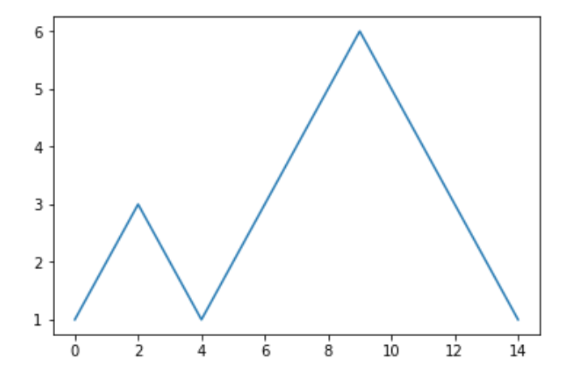
自定义横坐标打印
1 | y = [1, 2, 3, 2, 1, 2, 3, 4, 5, 6, 5, 4, 3, 2, 1] |
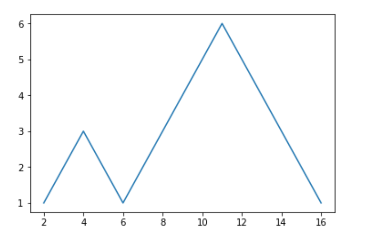
绘制正弦线
1 | import numpy as np # 载入数值计算模块 |
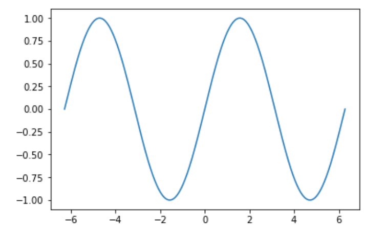
绘制柱形图
1 | plt.bar([1, 2, 3], [4, 5, 6]) |
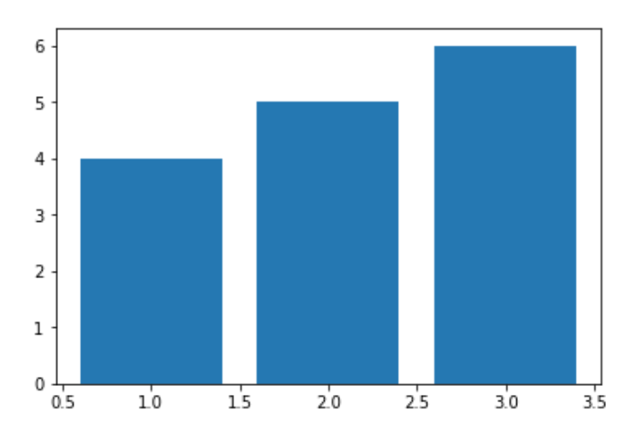
绘制散点图
1 | # X,y 的坐标均有 numpy 在 0 到 1 中随机生成 1000 个值 |
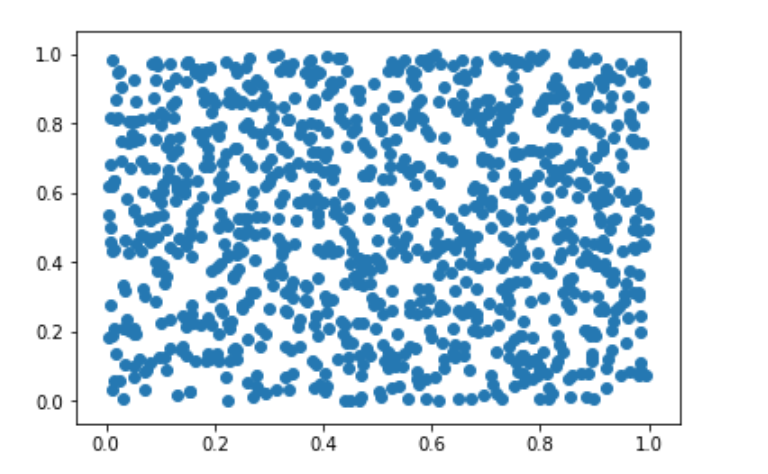
绘制饼状图
1 | plt.pie([1, 2, 3, 4, 5]) |
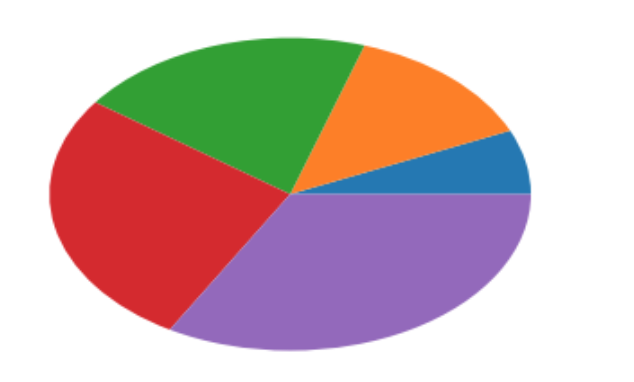
绘制向量图
1 | X, y = np.mgrid[0:10, 0:10] |
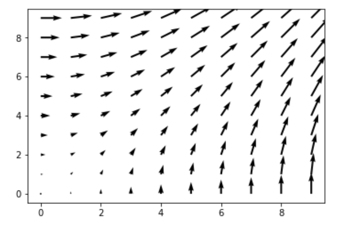
设置绘制参数
绘制二维直线
| 参数 | 含义 |
|---|---|
alpha= |
设置线型的透明度，从 0.0 到 1.0 |
color= |
设置线型的颜色 |
fillstyle= |
设置线型的填充样式 |
linestyle= |
设置线型的样式 |
linewidth= |
设置线型的宽度 |
marker= |
设置标记点的样式 |
| …… | …… |
绘制三角函数曲线
1 | # 在 -2PI 和 2PI 之间等间距生成 1000 个值，也就是 X 坐标 |
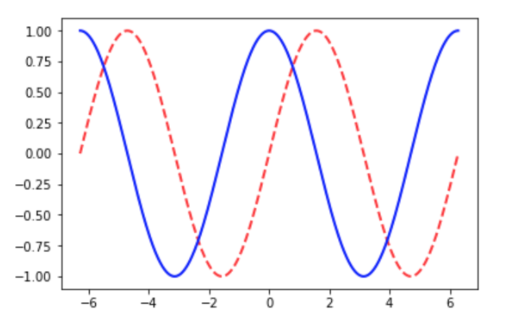
绘制散点图
| 参数 | 含义 |
|---|---|
s= |
散点大小 |
c= |
散点颜色 |
marker= |
散点样式 |
cmap= |
定义多类别散点的颜色 |
alpha= |
点的透明度 |
edgecolors= |
散点边缘颜色 |
1 | # 生成随机数据 |
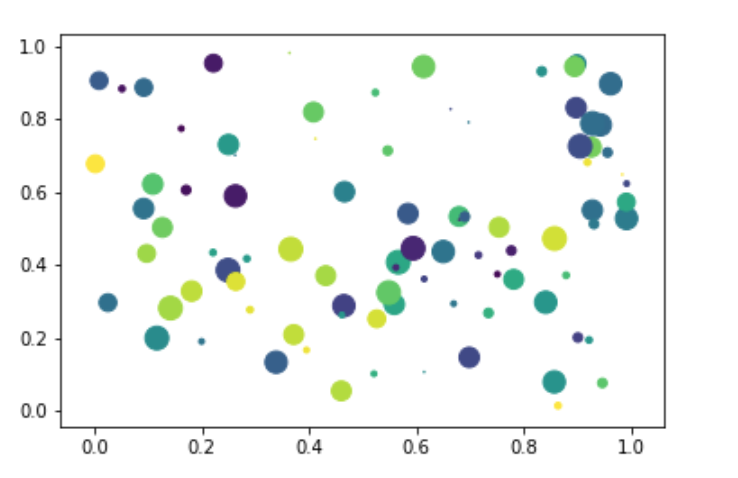
绘制饼状图
1 | # 各类别标签 |
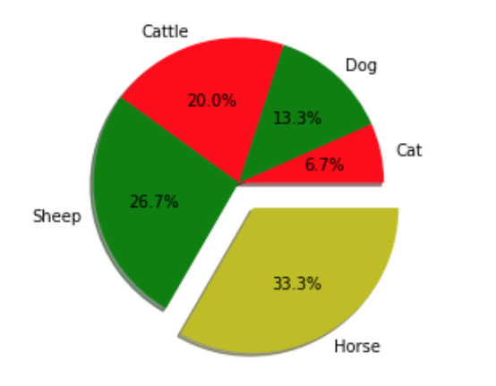
组合绘制
将需要绘制的代码放在一起就可以了
1 | x = [1, 3, 5, 7, 9, 11, 13, 15, 17, 19] |
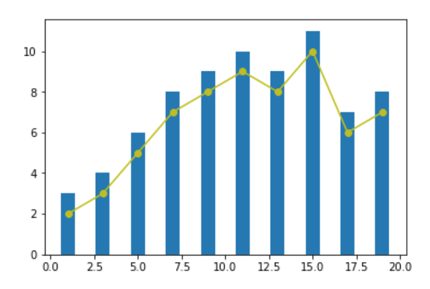
定义图片位置
1 | # 生成数据 0 - 10之间均匀生成20个数 |
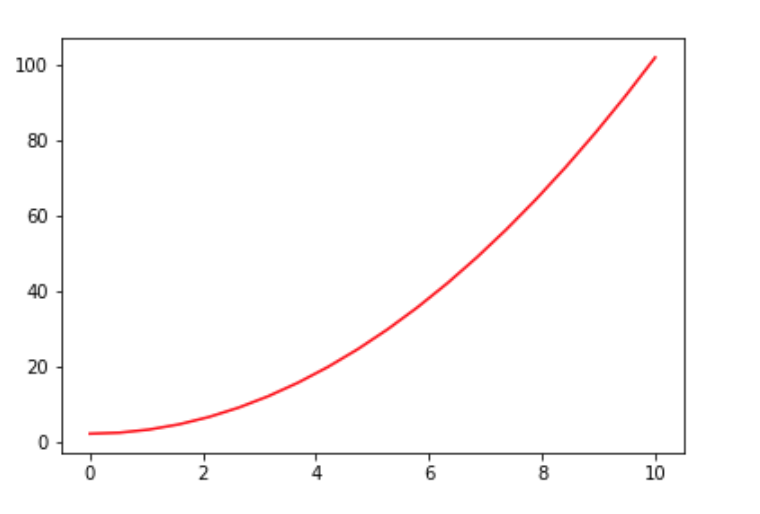
当然，也可以表中套表
1 | x = np.linspace(0, 10, 20) |
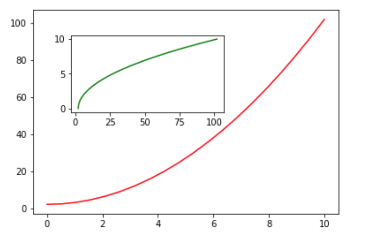
也可以利用 plt.subplots() 实现对子图的控制
1 | # 子图为 1 行，2 列 |
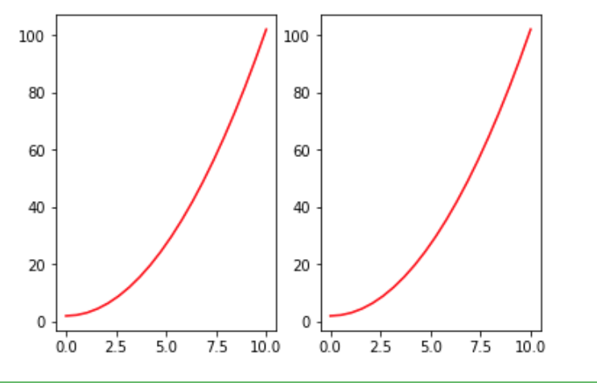
同样，也可以实现对画布尺寸和精度的调节
1 | # 通过 figsize 调节尺寸, dpi 调节显示精度 |
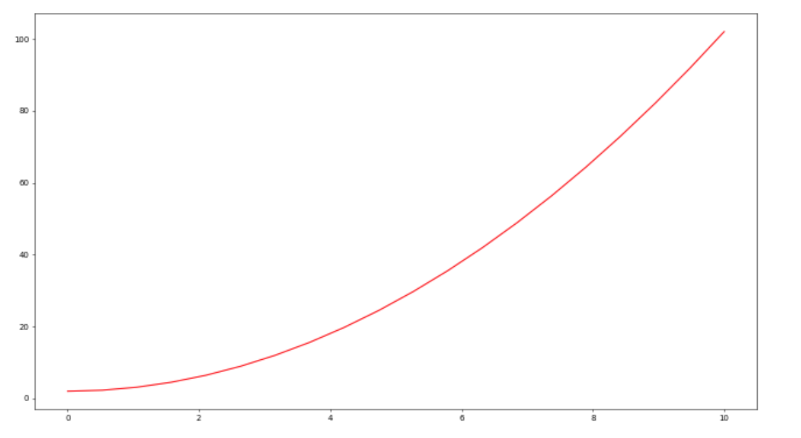
规范绘图方法
基础格式
1 | # 生成绘图对象 |
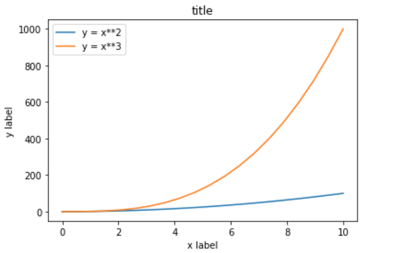
各种线条的颜色
1 | fig, ax = plt.subplots(figsize=(12, 6)) |
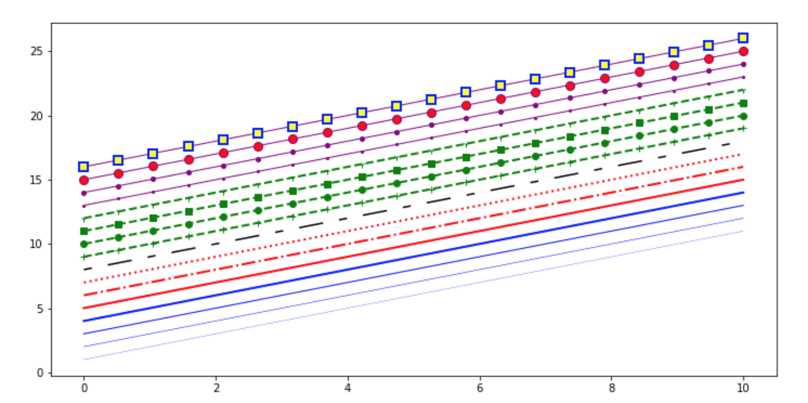
画布网格、坐标轴范围
1 | fig, axes = plt.subplots(1, 2, figsize=(10, 5)) |
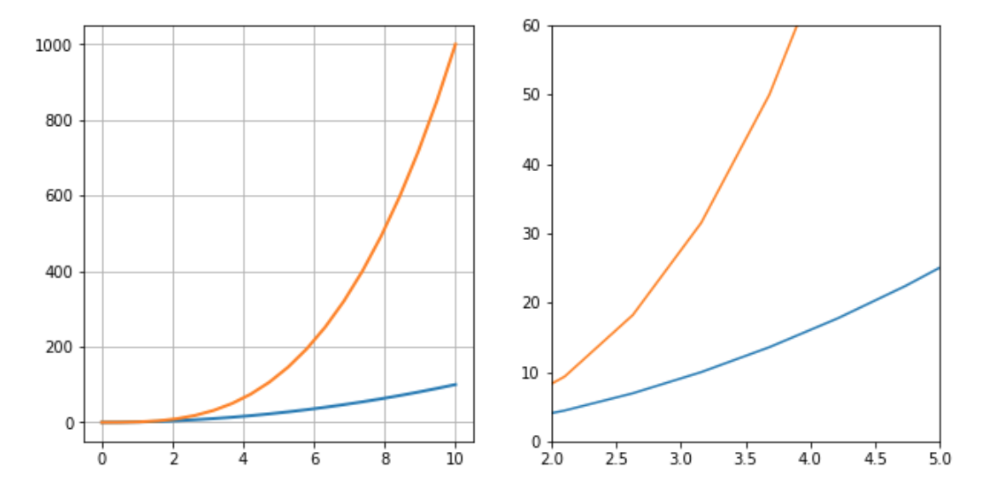
标注图片
Matplotlib 中，文字标注的方法由 matplotlib.pyplot.text() 实现。最基本的样式为 matplotlib.pyplot.text(x, y, s)，其中 x, y 用于标注位置定位，s 代表标注的字符串。除此之外，你还可以通过 fontsize= , horizontalalignment= 等参数调整标注字体的大小，对齐样式等。
1 | fig, axes = plt.subplots() |

除了文字标注之外，还可以通过 matplotlib.pyplot.annotate() 方法向图像中添加箭头等样式标注。向上面的例子中增添一行增加箭头标记的代码。
1 | plt.annotate('Min', xy=(32, 0.3), xytext=(36, 0.3), |
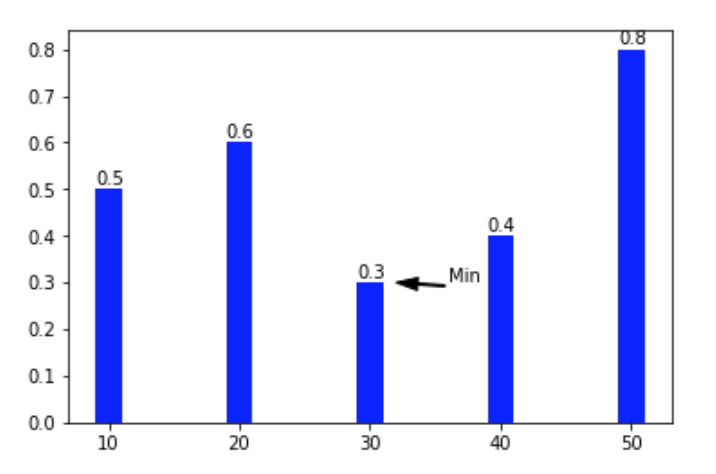
实战
绘制如下的图形
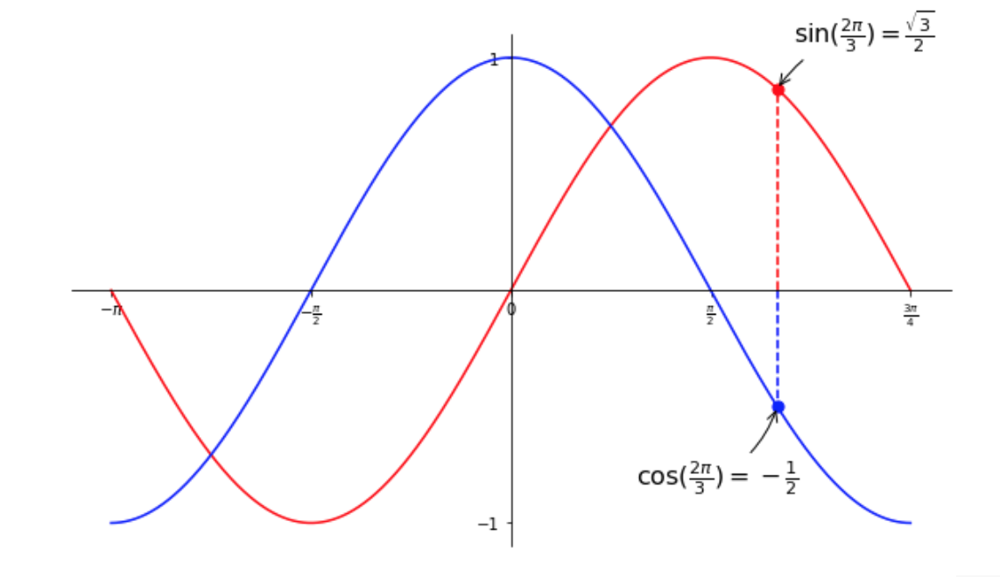
自己的代码
1 | %matplotlib inline |
参考答案
1 | # ----------------------------------------------------------------------------- |